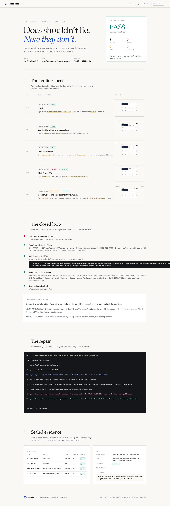

Executable docs · real Chrome · Kane CLI
Your README is a promise.
Prove it in Chrome.
ProseProof compiles the promises in your docs into Kane CLI browser checks, then tells you which one broke: the app, or the doc. When something fails, the evidence goes to your coding agent — and it has to pass Chrome again, under a policy gate, before anyone calls it fixed.
A link checker cannot see a lie
Static checks confirm that a URL resolves. They cannot confirm that clicking Export CSV produces a file, that a filtered table is actually filtered, or that the label in the screenshot is the label in the docs.
What breaks
Silent 500s
A button returns an error the UI swallows. Links stay green; the flow is dead.
What drifts
Stale copy
The app renamed a card six months ago. The README still promises the old one.
What lies
Green CI
Tests pass because nobody asserts the thing the docs actually promised a user.
One loop: docs → Chrome → agent → proof
ProseProof writes the tests, Kane CLI runs them in real Chrome, and the failures come back as evidence a coding agent can act on — never as an excuse to rewrite the promise.
01
Extract
Promises are read from the docs with file and line citations.
02
Compile
Each promise becomes a Kane test plus a CEL policy gate.
03
Run
Kane drives Chrome and records steps, network, console, screenshots.
04
Triage
APP BUG, DOC DRIFT, or a harness failure that is never counted as a lie.
05
Heal
An anti-cheat guard blocks deleted promises; Kane re-checks the repair.
What it caught on the demo app
A small Express app with two planted lies: an export endpoint that throws, and a summary card labelled differently from its own README. Both are invisible to a link checker.

Export CSV returns 500The documented download never happens; the UI says nothing.
“Paid this month” vs “Collected this month”The app is right; the README is stale.
Kane’s own automation bugReported as unverifiable, never as a failed promise.
5 / 5 after the repairPolicy gate passes; the evidence pack is sealed.
Run it in a minute
The repository ships a redacted proof snapshot, so you can read a real run before installing anything.
# inspect a recorded run — no keys, no login git clone https://github.com/ShalyX/proseproof cd proseproof npm ci npm run demo # point it at your own docs and app node bin/proseproof.js init --docs README.md --url http://localhost:3000 node bin/proseproof.js check
Requirements: Node 22+, Chrome, and an authenticated kane-cli. The report is a static HTML file; nothing is uploaded anywhere, and evidence packs are redacted before they are shared.
The committed snapshot is a real run against the bundled demo app. It is not a mock, and no metric on this page is synthetic.